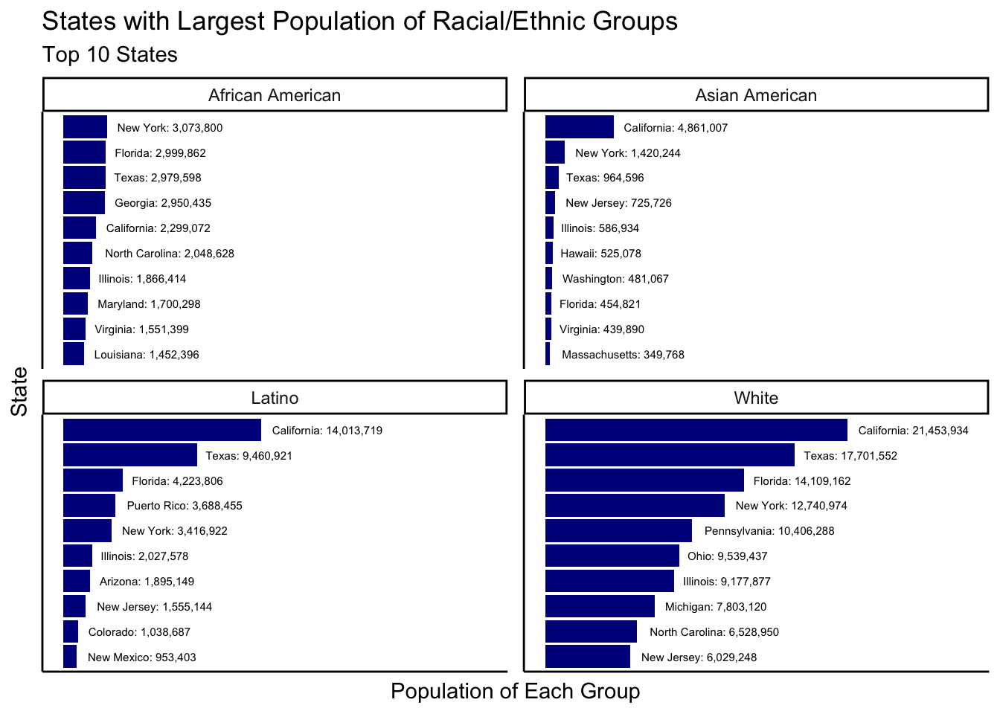

This exploratory analysis will leverage the tidycensus package by Kyle Walker and the tidyverse suite of packages from RStudio.
The goals of this analysis are as follows:
tidyverse functions–especially readr and dplyr–to import, export, and manipulate data.ggplot2 functions to visualize data.First, we need to load the required packages for our analysis.
# Load packages
library(tidycensus)
library(tidyverse)## ── Attaching packages ─────────────────────────────────────────────────────────────────────────────────── tidyverse 1.2.1 ──## ✔ ggplot2 3.1.0 ✔ purrr 0.2.5
## ✔ tibble 1.4.2 ✔ dplyr 0.7.8
## ✔ tidyr 0.8.1 ✔ stringr 1.3.1
## ✔ readr 1.1.1 ✔ forcats 0.3.0## ── Conflicts ────────────────────────────────────────────────────────────────────────────────────── tidyverse_conflicts() ──
## ✖ dplyr::filter() masks stats::filter()
## ✖ dplyr::lag() masks stats::lag()library(scales)##
## Attaching package: 'scales'## The following object is masked from 'package:purrr':
##
## discard## The following object is masked from 'package:readr':
##
## col_factorIf you do not already have a U.S. Census API key, you will need to request one from the U.S. Census Bureau here.
The following code block checks to see if you have a file called state_populations_by_race stored in your data subdirectory. If you cloned this repository from Ryan Brellenthin’s portfolio repository, the subdirectory and data will already be included. If the file exists in the subdirectory, executing the code will read the data set is in as an RDS file and store it as your df variable. If the file does not already exist, executing the code will download population data from the 2010 Census, store it to a df variable, and save it as an RDS object in your data subdirectory.
# Pull the population of each state by race and store as RDS object
if (file.exists('data/state_populations_by_race')) {
df <- readr::read_rds('data/state_populations_by_race')
} else {
list_of_variables = c('P008003', 'P008004', 'P008005', 'P008006', 'P004001', 'P004002', 'P004003')
df <- tidycensus::get_decennial(geography = 'state',
year = 2010,
variables = list_of_variables,
output = 'wide',
geometry = TRUE,
summary_var = 'P001001',
cache_table = TRUE)
readr::write_rds(df, 'data/state_populations_by_race')
rm(list_of_variables)
}Note my preference for placing each parameter and argument of the tidycensus::get_decennial function call on a separate line. I do not do this for every function call, but when the function involves a larger number of parameters, I find it helpful to read each one on a clean line.
You should now have a 52 row by 10 column tibble called df variable with the following dimensions and class attributes.
dim(df)
## [1] 52 11
class(df)
## [1] "sf" "tbl_df" "tbl" "data.frame"Because we are working with a tibble instead of a standard data frame, we can feel confident that our data will print relatively cleanly. Let’s go ahead and print the data frame.
df
## Simple feature collection with 52 features and 10 fields
## geometry type: MULTIPOLYGON
## dimension: XY
## bbox: xmin: -179.1473 ymin: 17.88481 xmax: 179.7785 ymax: 71.35256
## epsg (SRID): 4269
## proj4string: +proj=longlat +ellps=GRS80 +towgs84=0,0,0,0,0,0,0 +no_defs
## # A tibble: 52 x 11
## GEOID NAME P008003 P008004 P008005 P008006 P004001 P004002 P004003
## <chr> <chr> <dbl> <dbl> <dbl> <dbl> <dbl> <dbl> <dbl>
## 1 01 Alab… 3.28e6 1251311 28218 53595 4.78e6 4.59e6 1.86e5
## 2 02 Alas… 4.74e5 23263 104871 38135 7.10e5 6.71e5 3.92e4
## 3 04 Ariz… 4.67e6 259008 296529 176695 6.39e6 4.50e6 1.90e6
## 4 05 Arka… 2.25e6 449895 22248 36102 2.92e6 2.73e6 1.86e5
## 5 06 Cali… 2.15e7 2299072 362801 4861007 3.73e7 2.32e7 1.40e7
## 6 22 Loui… 2.84e6 1452396 30579 70132 4.53e6 4.34e6 1.93e5
## 7 21 Kent… 3.81e6 337520 10120 48930 4.34e6 4.21e6 1.33e5
## 8 08 Colo… 4.09e6 201737 56010 139028 5.03e6 3.99e6 1.04e6
## 9 09 Conn… 2.77e6 362296 11256 135565 3.57e6 3.10e6 4.79e5
## 10 10 Dela… 6.19e5 191814 4181 28549 8.98e5 8.25e5 7.32e4
## # ... with 42 more rows, and 2 more variables: summary_value <dbl>,
## # geometry <MULTIPOLYGON [°]>A few observations from this printout of our data:
class function, the df object is more than a standard data frame. The main reason for the difference is the inclusion of the geometry field. Each record within this field is actually its own list of coordinates, which will be helpful when it comes time to graph.dim function call, our tibble is 52 x 11.summary_var was specified in the original tidycensus::get_decennial function call. We know from that function call that it represents the total population in the state and can be used as a denominator for creating percentages.geometry contains a list of coordinates for each state, as noted above. This list of coordinates allows R (and other mapping software packages) to draw the state boundatries by connecting each of the data points with a line.Personally, I also enjoy the dplyr::glimpse function since it allows me to see a few sample data points for each field and arranges it in a way in which I don’t have to worry about how many columns are in my data set. Let’s take a look at what our data set looks like using that function.
dplyr::glimpse(df)
## Observations: 52
## Variables: 11
## $ GEOID <chr> "01", "02", "04", "05", "06", "22", "21", "08", ...
## $ NAME <chr> "Alabama", "Alaska", "Arizona", "Arkansas", "Cal...
## $ P008003 <dbl> 3275394, 473576, 4667121, 2245229, 21453934, 283...
## $ P008004 <dbl> 1251311, 23263, 259008, 449895, 2299072, 1452396...
## $ P008005 <dbl> 28218, 104871, 296529, 22248, 362801, 30579, 101...
## $ P008006 <dbl> 53595, 38135, 176695, 36102, 4861007, 70132, 489...
## $ P004001 <dbl> 4779736, 710231, 6392017, 2915918, 37253956, 453...
## $ P004002 <dbl> 4594134, 670982, 4496868, 2729868, 23240237, 434...
## $ P004003 <dbl> 185602, 39249, 1895149, 186050, 14013719, 192560...
## $ summary_value <dbl> 4779736, 710231, 6392017, 2915918, 37253956, 453...
## $ geometry <MULTIPOLYGON [°]> MULTIPOLYGON (((-85.00237 3..., MUL...From now on in this analysis, if we need to see our data, we will try to use the dplyr::glimpse function.
Our data set is still a bit unwieldy, so let’s do some data wrangling to get it a more workable place. Here are some things we will want to do:
Using the dplyr::rename function, we can specify which variable we would like to target and how we would like to rename the variable.
df <- df %>%
dplyr::rename(white = P008003,
black = P008004,
american_indian = P008005,
asian = P008006,
hispanic = P004003,
total_population = summary_value)As we were going through the renaming process, we realized that some fields from our initial data set are not too meaningful. For example, P004001 is identical to the summary_value field–both represent the total state population. We intended to use the summary_value field but did not realize the duplciation, so we can get rid of P004001 (which one you choose to get rid of does not actually matter). Also, because we are more interested in the Hispanic population in each state but will not explicitly measure the non-Hispanic population of each state, we can remove P004002. To make these changes, we will use the dplyr::select function.
df <- df %>%
dplyr::select(-P004001, -P004002)Note that, because we are only passing a couple arguments into the dplyr::select function, I do not find it visually helpful to set each one on a separate line. However, if that were your preference, you could certainly do so.
We can create new fields using the dplyr::mutate function, with simple arithmetic being used to define each new field.
df <- df %>%
dplyr::mutate(pct_white = white / total_population,
pct_black = black / total_population,
pct_american_indian = american_indian / total_population,
pct_asian = asian / total_population,
pct_hispanic = hispanic / total_population)Note that, because the number of spaces do not matter to how the software operates, it is sometimes more aesthetically pleasing and more easily readable to line up each line’s equal sign.
Sometimes, for the sake of consistency and clean code, you may want to change the format of your field names. In this instance, we would like all of our fields to be lowercase and to adhere to “snake case”. That preference means we still need to clean up the variable names for GEOID and NAME.
df <- df %>%
dplyr::rename(geoid = GEOID,
state = NAME)Hmm…, you might be saying, So we only had two arguments for the dplyr::rename function, but we still decided to split them onto separate lines?
Valid point. Although each of these example code blocks is taking place in isolation, when writing code, the general guideline is to choose what you prefer but be consistent!
The beauty of the tidyverse functions is that, using the %>% (pipe) operator, we can chain things together better than we did in each of the four steps above. Let’s redo our work–but all in one code block. Then, let’s use dplyr::glimpse to see what our new data set looks like.
df <- df %>%
dplyr::select(-P004001, -P004002) %>%
dplyr::rename(geoid = GEOID,
state = NAME,
white = P008003,
black = P008004,
american_indian = P008005,
asian = P008006,
hispanic = P004003,
total_population = summary_value) %>%
dplyr::mutate(pct_white = white / total_population,
pct_black = black / total_population,
pct_american_indian = american_indian / total_population,
pct_asian = asian / total_population,
pct_hispanic = hispanic / total_population)
glimpse(df)
## Observations: 52
## Variables: 14
## $ geoid <chr> "01", "02", "04", "05", "06", "22", "21", ...
## $ state <chr> "Alabama", "Alaska", "Arizona", "Arkansas"...
## $ white <dbl> 3275394, 473576, 4667121, 2245229, 2145393...
## $ black <dbl> 1251311, 23263, 259008, 449895, 2299072, 1...
## $ american_indian <dbl> 28218, 104871, 296529, 22248, 362801, 3057...
## $ asian <dbl> 53595, 38135, 176695, 36102, 4861007, 7013...
## $ hispanic <dbl> 185602, 39249, 1895149, 186050, 14013719, ...
## $ total_population <dbl> 4779736, 710231, 6392017, 2915918, 3725395...
## $ pct_white <dbl> 0.6852667, 0.6667915, 0.7301484, 0.7699904...
## $ pct_black <dbl> 0.261795003, 0.032754132, 0.040520543, 0.1...
## $ pct_american_indian <dbl> 0.005903673, 0.147657593, 0.046390521, 0.0...
## $ pct_asian <dbl> 0.011212962, 0.053693798, 0.027643074, 0.0...
## $ pct_hispanic <dbl> 0.03883101, 0.05526230, 0.29648685, 0.0638...
## $ geometry <MULTIPOLYGON [°]> MULTIPOLYGON (((-85.00237 3.....Our data set is now 52 x 14 with field names that are much easier to understand without needing to reference a data dictionary.
Let’s start visualizing our data.
sorted_df <- df %>%
as.data.frame() %>%
dplyr::select(state,
White = white,
`African American` = black,
Latino = hispanic,
`Asian American` = asian) %>%
dplyr::as_tibble() %>%
tidyr::gather(key = variable, value = value, -state) %>%
dplyr::group_by(variable) %>%
dplyr::top_n(10, value) %>%
dplyr::arrange(variable, desc(value)) %>%
dplyr::mutate(order = factor(-1 * row_number())) %>%
dplyr::arrange(variable, order)
sorted_df %>%
ggplot(aes(x = order, y = value)) +
geom_col(fill = 'dark blue') +
geom_text(hjust = -0.1, size = 2, aes(label = sprintf("%s: %s", state, scales::comma(value))), color = 'black') +
coord_flip(ylim = c(0, 30000000)) +
labs(title = 'States with Largest Population of Racial/Ethnic Groups',
subtitle = 'Top 10 States',
x = 'State',
y = 'Population of Each Group') +
facet_wrap(~ variable, nrow = 2, scales = 'free_y') +
theme_classic() +
theme(axis.text = element_blank(),
axis.ticks = element_blank())
sorted_df <- df %>%
as.data.frame() %>%
dplyr::select(state,
`% White` = pct_white,
`% African American` = pct_black,
`% Latino` = pct_hispanic,
`% Asian American` = pct_asian) %>%
dplyr::as_tibble() %>%
tidyr::gather(key = variable, value = value, -state) %>%
dplyr::group_by(variable) %>%
dplyr::top_n(10, value) %>%
dplyr::arrange(variable, desc(value)) %>%
dplyr::ungroup() %>%
dplyr::mutate(order = factor(-1 * row_number()),
variable = stringr::str_to_title(variable)) %>%
dplyr::arrange(variable, order)
sorted_df %>%
ggplot(aes(x = order, y = value)) +
geom_col(fill = 'dark blue') +
geom_text(hjust = -0.1, size = 2, aes(label = sprintf("%s: %s", state, scales::percent(value))), color = 'black') +
coord_flip(ylim = c(0, 1.3)) +
labs(title = 'States with Largest Proportions of Racial/Ethnic Groups',
subtitle = 'Top 10 States',
x = 'State',
y = '% of Population in Each Group') +
facet_wrap(~ variable, nrow = 2, scales = 'free_y') +
theme_classic() +
theme(axis.text = element_blank(),
axis.ticks = element_blank())